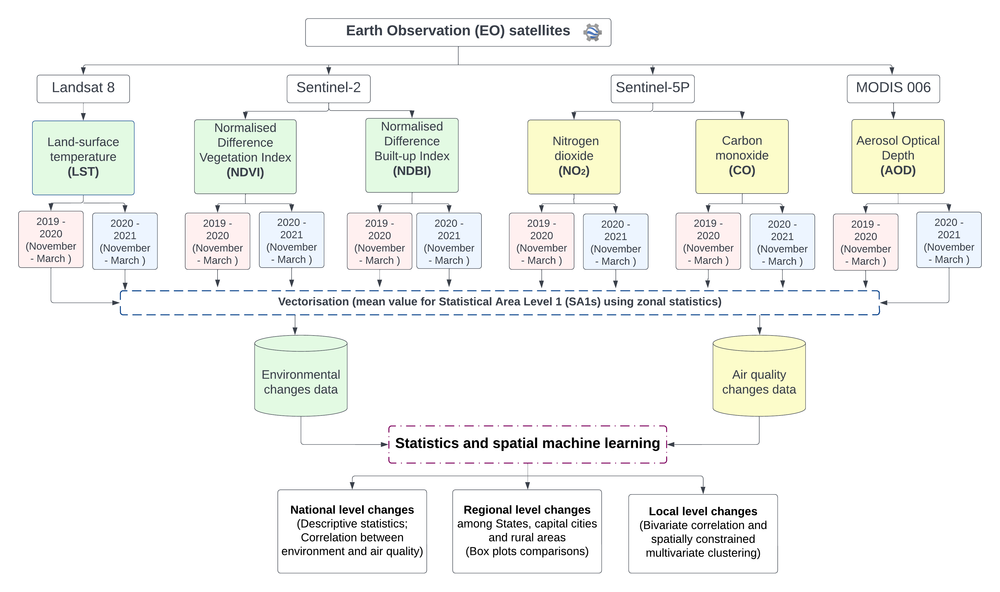

Earth Observing and Spatial Machine Learning Environmental and Air Quality Changes Pre vs Post COVID-19 Outbreak in Australia
Abstract
Started from Mid-late March 2020, lockdown restrictions progressively implemented by Australian government to restrict citizens’ movements and reduce their opportunities to gather with other people outside their household. International and national border measures for some states and territories introduced. This study aims to investigate the environmental and air quality changes with the reference of before COVID-19 lockdown in Australia. In total, six Earth Observation (EO) parameters, namely Land surface temperature (LST), Normalised Difference Vegetation Index (NDVI), Normalised Difference Built-up Index (NDBI), Carbon monoxide (CO), Nitrogen dioxide (NO2) and Aerosols (AOD), were derived from Google Earth Engine (GEE) cloud platform for two periods of November 2019 - March 2020 and November 2020- March 2021. Statistics and spatial Machine Learning were performed to examine the changes of the six parameters at national, regional, and local level across the whole Australia. Nationwide changes were found in reduced temperature, increased NDVI and improved air quality. Regionally, most of the capital cities and the rural regions showed decrease in temperature except Greater Melbourne and Greater Darwin. For air quality, both capital cities and the rural areas showed decrease in AOD and CO level but increase in NO2 in southeast areas of Australia. Most of the capital cities experienced increased LST but decreased NDVI, indicating more vulnerability towards heat. In contrast, Hobart, Canberra and all the regional areas showed enhanced heat resilience. Finally, five clustering zones for local communities across the country were delineated with similar environmental and air quality changes using spatially constrained multivariate machine learning. This study demonstrates multi-scale analysis capabilities of Earth Observation and spatial machine learning to investigate the spatial and temporal variations of the environmental and air quality changes as a whole. .
Methodological Framework

Acknowledgment
This study is supported by the NCRIS-enabled Australian Urban Research Infrastructure Network (AURIN). Project name: Integrated Heat Vulnerability Assessment Toolkit for Australian Cities, AURIN, High Impact Projects 2021.

This work by (Dr Qian (Chayn) Sun and RMIT GISail group) is licensed under a Creative Commons Attribution 4.0 International License.